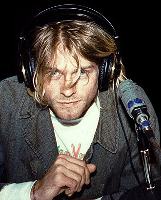
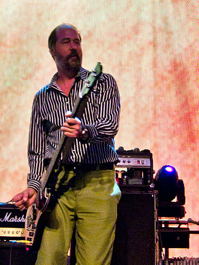
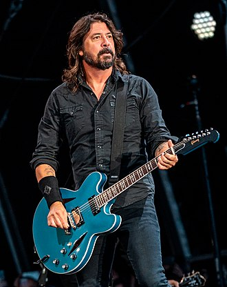

About
Nirvana was an American rock band formed in Aberdeen, Washington in 1987. Founded by lead singer and guitarist Kurt Cobain and bassist Krist Novoselic, the band went through a succession of drummers, most notably Chad Channing, before recruiting Dave Grohl in 1990. Nirvana's success popularized alternative rock, and they were often referenced as the figurehead band of Generation X. Their music maintains a popular following and continues to influence modern rock and roll culture.
In the late 1980s, Nirvana established itself as part of the Seattle grunge scene, releasing its first album, Bleach, for the independent record label Sub Pop in 1989. They developed a sound that relied on dynamic contrasts, often between quiet verses and loud, heavy choruses. After signing to major label DGC Records in 1991, Nirvana found unexpected mainstream success with "Smells Like Teen Spirit", the first single from their landmark second album Nevermind (1991). A cultural phenomenon of the 1990s, Nevermind was certified Diamond by the RIAA and is credited for ending the dominance of hair metal.
Characterized by their punk aesthetic, Nirvana's fusion of pop melodies with noise, combined with their themes of abjection and social alienation, brought them global popularity. Following extensive tours and the 1992 compilation album Incesticide and EP Hormoaning, the band released their highly anticipated third studio album, In Utero (1993). The album topped both the US and UK album charts, and was acclaimed by critics. Nirvana disbanded following Cobain's suicide in April 1994. Various posthumous releases have been overseen by Novoselic, Grohl, and Cobain's widow Courtney Love. The posthumous live album MTV Unplugged in New York (1994) won Best Alternative Music Performance at the 1996 Grammy Awards.
Nirvana is one of the best-selling bands of all time, having sold more than 75 million records worldwide. During their three years as a mainstream act, Nirvana received an American Music Award, Brit Award and Grammy Award, as well as seven MTV Video Music Awards and two NME Awards. They achieved five number-one hits on the Billboard Alternative Songs chart and four number-one albums on the Billboard 200. In 2004, Rolling Stone named Nirvana among the 100 greatest artists of all time. They were inducted into the Rock and Roll Hall of Fame in their first year of eligibility in 2014.
Members (Final line-up)
-
Kurt Cobaine
 -
Krist Novoselic
 -
Dave Grohl

Discography
- Bleach (1989)
- Nevermind (1991)
- In Utero (1993)